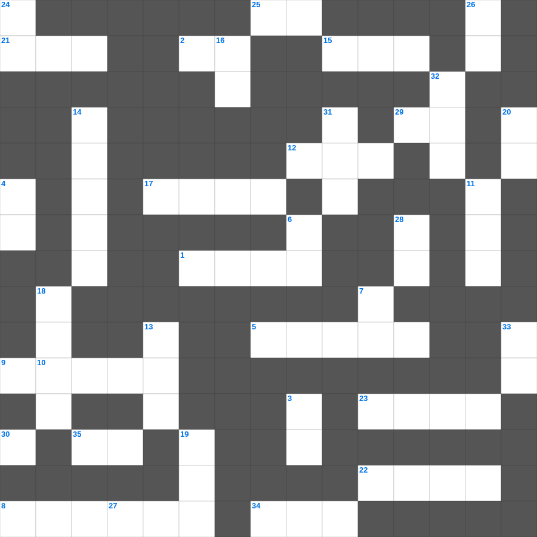

하나님의 전신 갑주
오늘은 하나님의의 주요 내용을 담은 하나님의 성경퀴즈를 준비했습니다. 총 35개의 힌트가 있으며, 주일학교 교재나 성경공부 자료로 활용하기 좋습니다. 무료로 즐기는 하나님의 가로세로 퍼즐을 지금 바로 풀어보세요!

📝 가로 힌트
1. 지붕을 뚫고 내려온 병자
2. 쓴 물이 단물로 변한 곳
5. 예수님이 저주하여 마른 나무
8. 다윗이 물맷돌로 거인 장수를 이긴 사건
9. 성도들 간의 사랑의 교제
12. 죄를 속하기 위해 드리는 제사
15. 매주 교체하는 거룩한 떡
17. 드보라 사사가 재판하던 나무
21. 이스라엘이 광야에서 보낸 시간(년)
22. 모세가 홍해를 가르고 마른 땅처럼 건넌 일
23. 비둘기가 물고 온 평화의 상징 잎사귀
25. 이것하게 하는 자는 하나님의 아들이라 일컬음을 받음
27. 성경 인물 중 가장 키가 큰 사람은?
29. 멜리데 섬에서 바울을 문 동물
34. 열두 해를 이것증으로 앓던 여인
35. 시편 다음 책
📝 세로 힌트
3. 열 처녀 비유에서 준비해야 했던 것
4. 야곱의 아들 수
6. 집을 나가 방탕하게 살다 돌아온 아들
7. 광야에서 이스라엘이 먹은 하늘 양식
10. 기드온의 양털 시험
11. 하나님의 보좌 앞 일곱 등불
13. 솔로몬 성전의 두 기둥 이름 중 다른 하나
14. 이스라엘이 바벨론으로 끌려간 사건
16. 여호와 이것: 치료하시는 하나님
18. 모세가 물을 낼 때 사용한 도구
19. 입다의 고향
20. 새 예루살렘 성곽의 첫 번째 기초석
24. 초대 교회에서 구제를 위해 세운 일곱 이것
26. 안식일에 밀 이삭을 잘라 먹은 제자들
28. 사흘 만에 다시 살아나신 기적
30. 네 이웃의 집을 이것내지 말라
31. 부지중에 지은 죄를 속하기 위한 제사
32. 예수님이 자라나신 동네
33. 일곱째 날에 하나님이 하신 일
🏷️ 키워드
하나님의 성경퀴즈, 하나님의, 십자가로세로, 성경퀴즈, 말씀퀴즈, 가로세로퍼즐